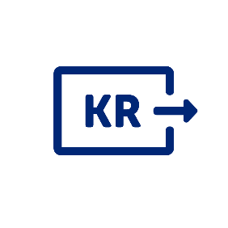

Fintech for Dummies:
Kom i gang med bank-API'er!
https://github.com/SpareBank1/sb1fs
Om oss
- Jonas Nordstrand
- Tore Haugland
Innhold
Krav til utstyr
- OS: Windows 10 m/admin tilgang eller Linux eller MacOS
- Java: Java 8 eller bedre
- Node (npm)
- Maven (mvnw er inkludert i prosjekt)
- git
- Valgfritt IDE
Del 2
Hva vi skal lage i dag - sb1fs
Hvorfor sb1fs ?
Øvning 1: Uppstart
Detaljerade instruktioner i workshop.md
class SaulFsApplication {
public static void main(String[] args) {
CommandLine commandLine = generateCommandLine(args);
String mountPath = commandLine.getOptionValue(MOUNT_PATH);
UniRest.configureUnirest();
OldSchoolHttpServer.serveJson();
...
...ccounts
HttpResponse response = Java8Util.propagate(() -> Unirest
.get("http://localhost:8080")
.header("Accept", "application/vnd.sparebank1.v1+json")
.asObject(SaulShow.class));
SaulShow jsonRoot = response.getBody();
DirNode root = SaulFs.createSaulRoot(jsonRoot);
new Sb1fs(root, mountPath).start();
}
Del 1
Hvorfor snakker alle om PSD2 og bank APIer nå?
PSD2
- Du eier dine data
- EU Januar 2018
- Norge i slutten av 2019
Konto
Transaksjoner
Betaling
Del 3
Autentisering - oauth2
DEmo: hvordan finne authtoken i utvikerportal
Øvning 2: Registrering i SpareBank 1 och visning av konto-saldo
https://developersparebank1.no
Detaljerade instruktioner och tips i workshop.md!

quicktype generates strongly-typed models and serializers from JSON, JSON Schema, and GraphQL queries, making it a breeze to work with JSON type-safely in any programming language.
$ quicktype --out . \
--top-level ApiTransactions \
--lang java \
--package no.sparebank1.sb1fs.api.transactions \
transactions.json
Øvning 3: Visning av transaktioner
Detaljerade instruktioner och tips i workshop.md!